14. Logotipo Quantum3D¶
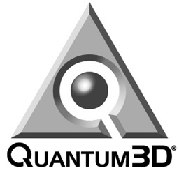Abrimos un nuevo documento con Inkscape.
Copiamos el logotipo de más arriba en Inkscape para que nos sirva de modelo.
Dibujamos un triángulo rojo con transparencia al 50 mientras presionamos la tecla Control para que la base sea horizontal.
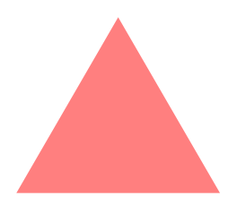Dibujamos un círculo verde con transparencia al 50 y lo situamos en el centro del triángulo activando 'Ajustar nodos' en la barra de herramientas vertical de la derecha.
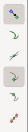 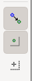 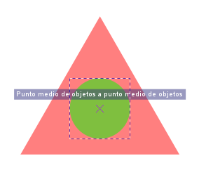Podemos ajustar el tamaño del círculo con los tiradores exteriores mientras presionamos Control + Shift para que el círculo no se mueva del centro de la figura.
Continuamos creando un rectángulo de color azul con transparencia 50 que salga del círculo verde.
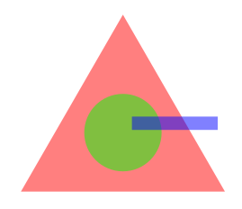Seleccionamos el círculo y luego el rectángulo y con las herramientas de alineación, centramos verticalmente el rectángulo con el círculo.
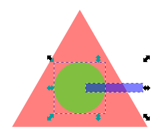Ahora debemos activar 'Ajustar el centro de rotación de un elemento'

Y pulsamos dos veces sobre el círculo y el rectángulo seleccionados para que aparezcan los tiradores de giro y la cruz del centro de giro.
Debemos mover la cruz al centro del círculo, que será el centro de rotación.
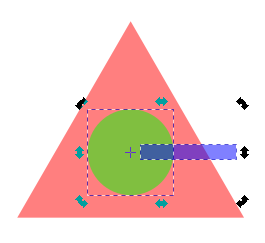Con la herramienta del menú
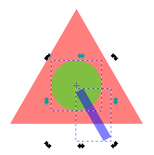Objeto... Transformar...rotamos ambas figuras hacia la derecha 60 grados. También podríamos rotar el conjunto con los tiradores, aunque no conseguiríamos tanta precisión.Unimos el círculo y el rectángulo con la opción del menú
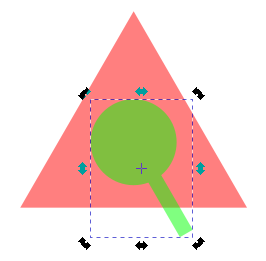Trayecto... UniónSeleccionamos todos los objetos y restamos uno de otro con la opción del menú
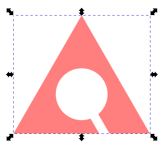Trayecto... DiferenciaPara continuar, duplicaremos el objeto recién creado y le haremos más pequeño seleccionando varias veces la opción del menú
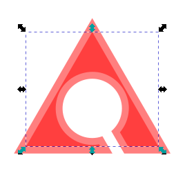Trayecto... Reducir.Esta opción hará el objeto más pequeño, reduciendo los bordes en perpendicular a los lados del dibujo.
Ahora debemos duplicar el nuevo objeto creado (el triángulo pequeño) y restarle del triángulo grande inferior
Trayecto... Diferencia. Para seleccionar ambos, recuerda pinchar sobre ellos mientras pulsas la tecla Shift.El resultado de la diferencia será un triángulo interior y otro exterior que coinciden en sus márgenes.

Separando ambos triángulos se pueden observar mejor las dos figuras.
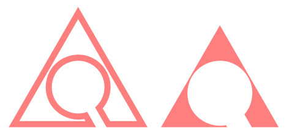Para continuar, debemos dividir el margen exterior (el triángulo mayor) en partes que más tarde tendrán un color distinto. Para conseguirlo vamos a utilizar la herramienta de trazar rectas y curvas 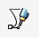 junto con las opciones para ajustar nodos y trayectos.
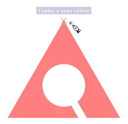 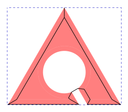Ya está trazado el trayecto dividiendo todos los tramos exteriores y terminando en el punto del comienzo. Ahora seleccionamos el trayecto y el triángulo exterior y aplicamos la herramienta del menú
Trayecto... DivisiónSi nos resulta difícil seleccionar los dos objetos, podemos retirar temporalmente el triángulo interior o seleccionar los objetos a partir de la ventana de objetos que se abre en el menú
Objeto... Objetos....
Los diferentes bordes podrán separarse entre sí.
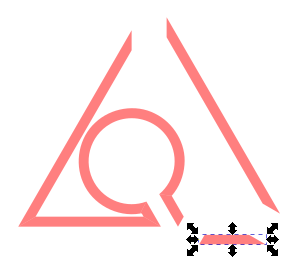Para volver a unirles solo hay que presionar la tecla Control + Z o en el menú seleccionar
Edición... Deshacer.Ya podemos unir los dos triángulos gracias a que los nodos se juntarán de forma automática al acercar una figura a la otra.
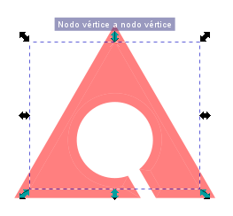Llegado este momento, seleccionaremos el color adecuado para cada pieza tomando como modelo el logotipo del inicio que hemos copiado, con la herramienta 'Seleccionar colores de la imagen' que se encuentra en la ventana del menu
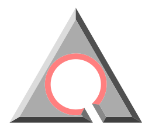Objeto... Relleno y bordeDebemos colorear el borde circular central con un gradiente que comience con un color oscuro arriba a la izquierda y termine con un color más claro abajo a la derecha.

Solo falta para terminar, crear un círculo y colocarle en el centro de los triángulos.
Daremos color al circulo con un degradado radial que tenga color blanco en el centro y gris oscuro en el extremo.
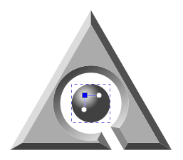Deseleccionamos la esfera y ya tenemos el logotipo terminado.